Paikalliset 2 Hz savupeilit ja muutospaketit. Rajatut sortumapäivitykset, vain muuttuneiden kattotukien korjaus. Kaukaisten kokonaisten lumiruutujen viisi renderöintikanavaa workereille; uusi jälki ohittaa myöhäisen taustatuloksen.
1000 osan suurpalo ei vielä täytä vakaan 60 FPS:n vaatimusta. 120 FPS:ää ei ole validoitu. Tässä julkaistaan myös huonot ruutuajat, ei keski-FPS-hyväksyntää.
M1 Pro / Chrome / 1440×900 / noin 60 Hz. Sama tallennettu kolmikerroksinen talo, aidot katot ja aukot. Eläimet, rakennuspintalumi ja lämpökenttä pois; muut sää- ja rakennusjärjestelmät mukana. Sää elää: ei jäädytetty ennen–jälkeen-A/B. Käynnistys, tallenteen lataus, sytytyskomento ja kuvakaappaukset mittausikkunoiden ulkopuolella. Simulaatio voi kuormassa edetä seinäkelloa hitaammin.
| Ajo / vaihe | Pahin ruutu | 1 % low FPS | 60 FPS alitusaika | Pisin alitus | Savujonon huippu |
|---|---|---|---|---|---|
| native · baseline | 50.1 ms | 27.9 | 54.3 % | 100.0 ms | 0 |
| native · three-seed-spread | 83.4 ms | 17.8 | 83.1 % | 683.4 ms | 100 |
| native · mass-ignition-stress | 133.3 ms | 8.2 | 100.0 % | 19965.9 ms | 2311 |
| native · damage | 150.0 ms | 7.3 | 100.0 % | 24965.7 ms | 2459 |
| native · collapse | 166.7 ms | 9.0 | 99.8 % | 53764.5 ms | 2195 |
| native · rubble | 66.6 ms | 21.1 | 83.4 % | 366.7 ms | 183 |
| primitive · baseline | 16.8 ms | 59.5 | 0.0 % | 0.0 ms | 0 |
| primitive · three-seed-spread | 50.1 ms | 27.6 | 8.5 % | 116.7 ms | 99 |
| primitive · mass-ignition-stress | 116.7 ms | 9.6 | 100.0 % | 19982.6 ms | 2171 |
| primitive · damage | 116.7 ms | 8.6 | 100.0 % | 24982.4 ms | 2541 |
| primitive · collapse | 133.4 ms | 10.1 | 89.5 % | 35598.5 ms | 2477 |
| primitive · rubble | 66.7 ms | 24.6 | 47.5 % | 150.0 ms | 28 |
60 FPS / 3 % toleranssi = 17,182 ms. Myös tiukat 60/120 rajat ja yksittäiset ruutuajat raakadatassa.
12 oikeaa selainworker-ajoa, 4225 vertexiä kussakin, kaikki viisi attribuuttia täsmälleen sama kuin vanhassa pääsäielaskennassa. Jokaisessa toistossa uusi kylmä worker tarkoituksella. Taustatyön valmistumisaika EI ole pääsäikeen pysähdys. Lukuja ei pidä tulkita pelin FPS-parannukseksi.
| Toisto | Kaappaus/lähetys | Käyttöönotto | Vanha pääsäielaskenta | Tulos valmis |
|---|---|---|---|---|
| 1 | 2.1 ms | 0.2 ms | 3.4 ms | 25.4 ms |
| 2 | 1.3 ms | 0.0 ms | 1.2 ms | 19.7 ms |
| 3 | 0.9 ms | 0.1 ms | 1.3 ms | 23.8 ms |
| 4 | 0.9 ms | 0.0 ms | 1.3 ms | 18.5 ms |
| 5 | 1.0 ms | 0.0 ms | 1.2 ms | 19.5 ms |
| 6 | 1.0 ms | 0.0 ms | 1.1 ms | 19.4 ms |
| 7 | 1.2 ms | 0.1 ms | 0.9 ms | 19.7 ms |
| 8 | 0.9 ms | 0.0 ms | 0.9 ms | 19.5 ms |
| 9 | 0.6 ms | 0.0 ms | 0.9 ms | 22.8 ms |
| 10 | 0.7 ms | 0.1 ms | 0.7 ms | 19.3 ms |
| 11 | 0.7 ms | 0.0 ms | 0.7 ms | 19.2 ms |
| 12 | 0.7 ms | 0.0 ms | 0.8 ms | 18.9 ms |
Yhteenveto · Lumikokeet · Native: kaikki ruutuajat · Primitiivi: kaikki ruutuajat · R27-vertailuraportti · Peli
1000 osaa pystyssä, 0 palaa, 0 rauniota. Savuworker-virheitä 0; odottavia kyselyitä 0. Sortumacommitin huippu 0.0 ms, tuennan pääsäiehuippu 0.2 ms. Näitä huippuja ei pidä summata.
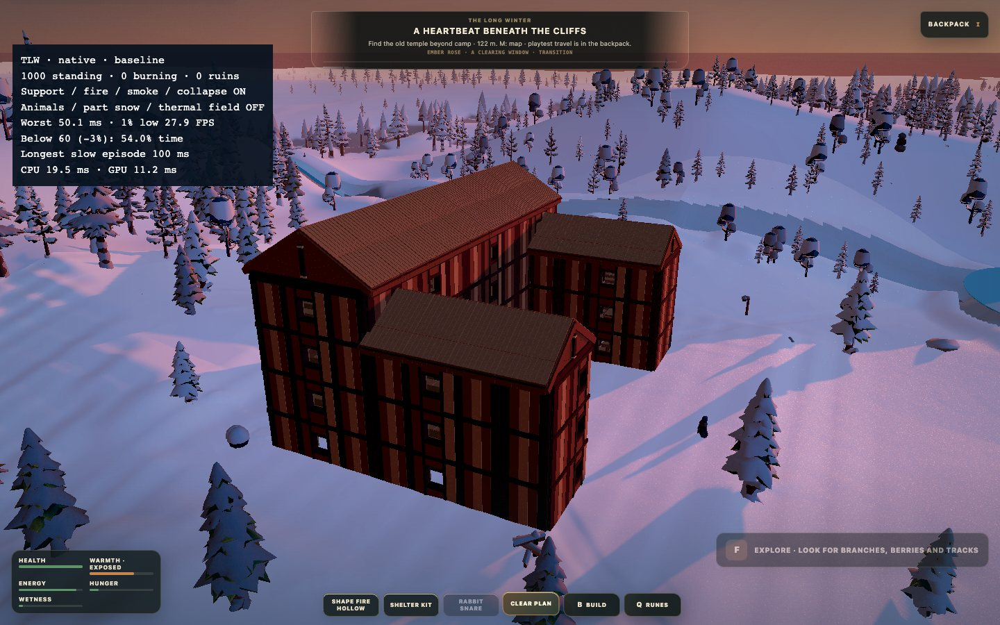
1000 osaa pystyssä, 3 palaa, 0 rauniota. Savuworker-virheitä 0; odottavia kyselyitä 18. Sortumacommitin huippu 0.0 ms, tuennan pääsäiehuippu 15.8 ms. Näitä huippuja ei pidä summata.
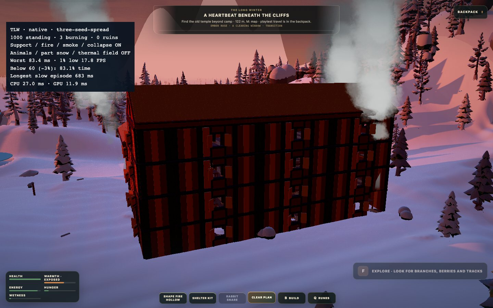
997 osaa pystyssä, 997 palaa, 0 rauniota. Savuworker-virheitä 0; odottavia kyselyitä 1990. Sortumacommitin huippu 10.8 ms, tuennan pääsäiehuippu 16.0 ms. Näitä huippuja ei pidä summata.
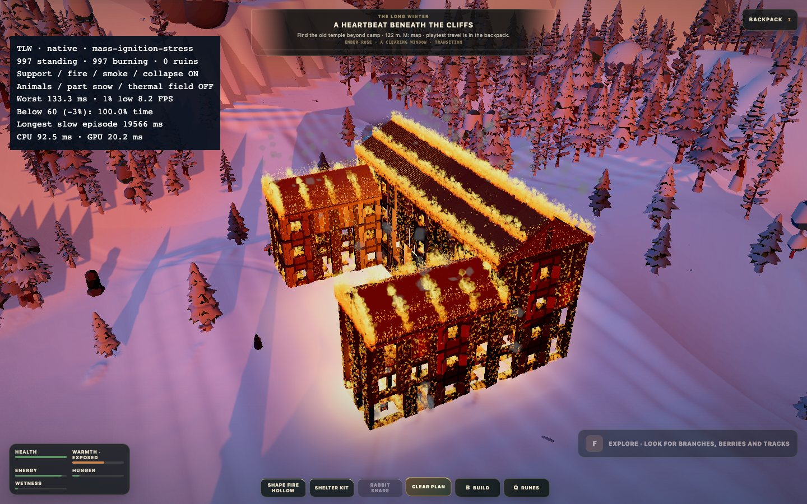
881 osaa pystyssä, 881 palaa, 60 rauniota. Savuworker-virheitä 0; odottavia kyselyitä 1748. Sortumacommitin huippu 10.1 ms, tuennan pääsäiehuippu 15.1 ms. Näitä huippuja ei pidä summata.
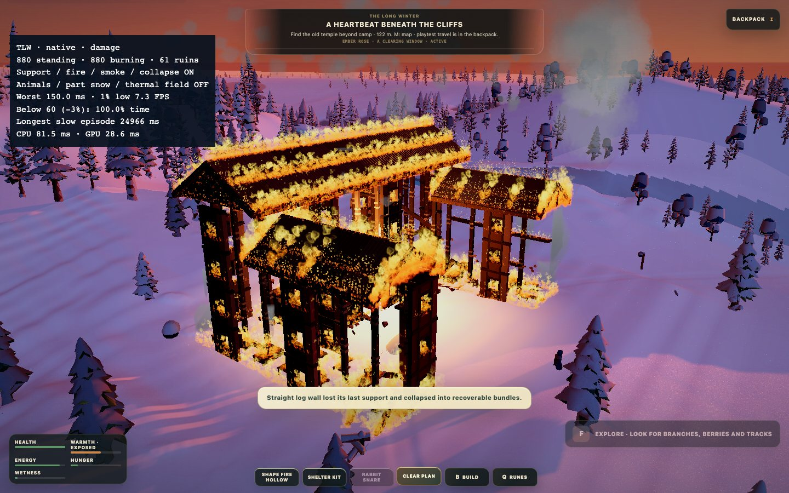
0 osaa pystyssä, 0 palaa, 752 rauniota. Savuworker-virheitä 0; odottavia kyselyitä 57. Sortumacommitin huippu 6.5 ms, tuennan pääsäiehuippu 3.3 ms. Näitä huippuja ei pidä summata.
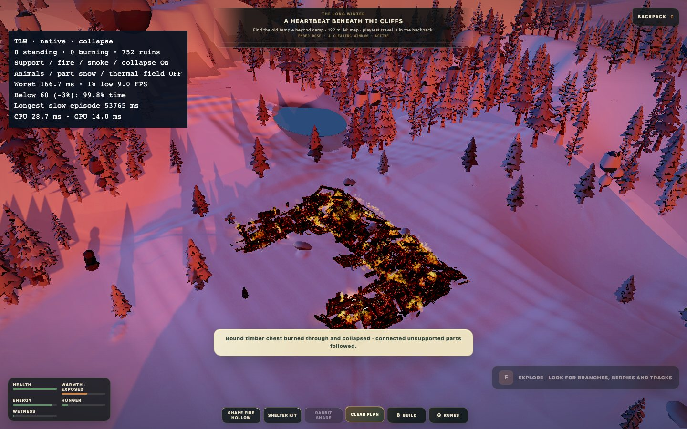
0 osaa pystyssä, 0 palaa, 752 rauniota. Savuworker-virheitä 0; odottavia kyselyitä 1. Sortumacommitin huippu 0.0 ms, tuennan pääsäiehuippu 0.1 ms. Näitä huippuja ei pidä summata.
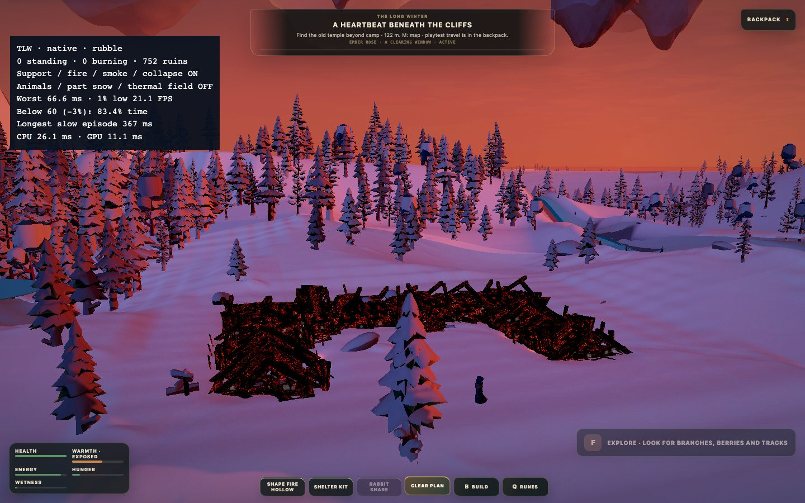
1000 osaa pystyssä, 0 palaa, 0 rauniota. Savuworker-virheitä 0; odottavia kyselyitä 0. Sortumacommitin huippu 0.0 ms, tuennan pääsäiehuippu 0.2 ms. Näitä huippuja ei pidä summata.
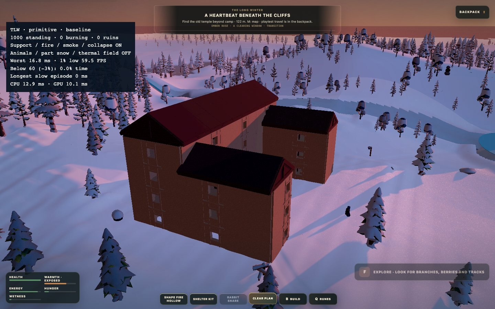
1000 osaa pystyssä, 3 palaa, 0 rauniota. Savuworker-virheitä 0; odottavia kyselyitä 18. Sortumacommitin huippu 0.0 ms, tuennan pääsäiehuippu 14.4 ms. Näitä huippuja ei pidä summata.
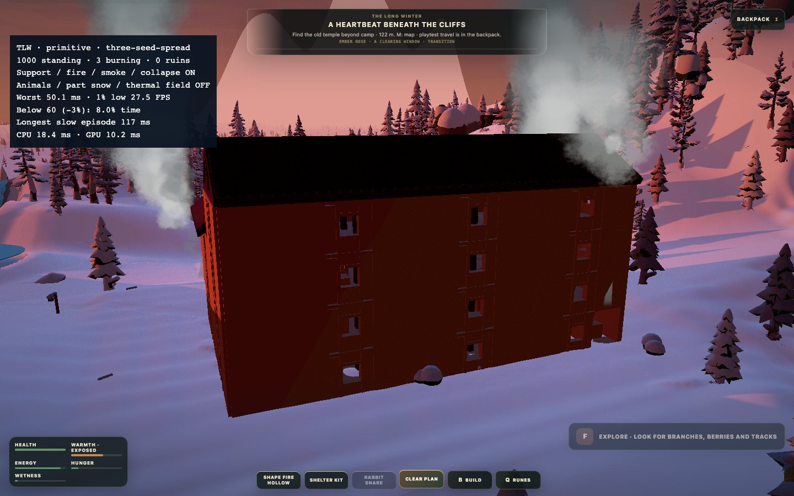
997 osaa pystyssä, 997 palaa, 0 rauniota. Savuworker-virheitä 0; odottavia kyselyitä 1683. Sortumacommitin huippu 11.3 ms, tuennan pääsäiehuippu 15.7 ms. Näitä huippuja ei pidä summata.
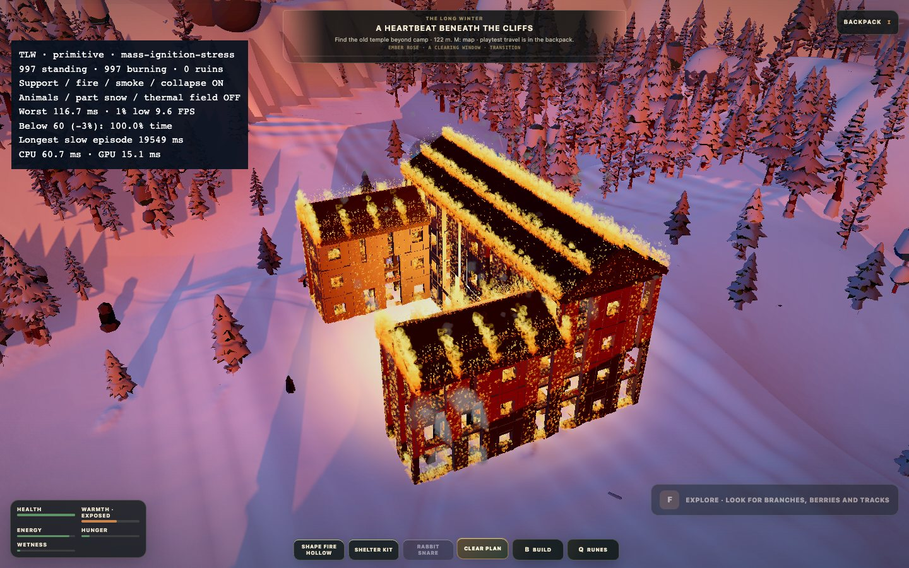
878 osaa pystyssä, 878 palaa, 53 rauniota. Savuworker-virheitä 0; odottavia kyselyitä 2044. Sortumacommitin huippu 8.1 ms, tuennan pääsäiehuippu 14.7 ms. Näitä huippuja ei pidä summata.
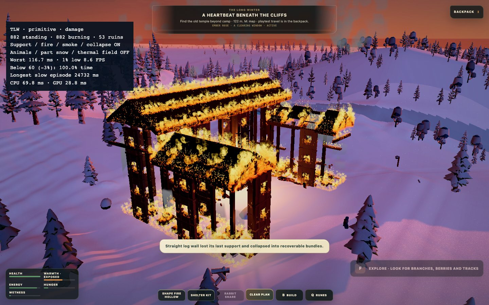
0 osaa pystyssä, 0 palaa, 748 rauniota. Savuworker-virheitä 0; odottavia kyselyitä 3. Sortumacommitin huippu 5.5 ms, tuennan pääsäiehuippu 3.6 ms. Näitä huippuja ei pidä summata.
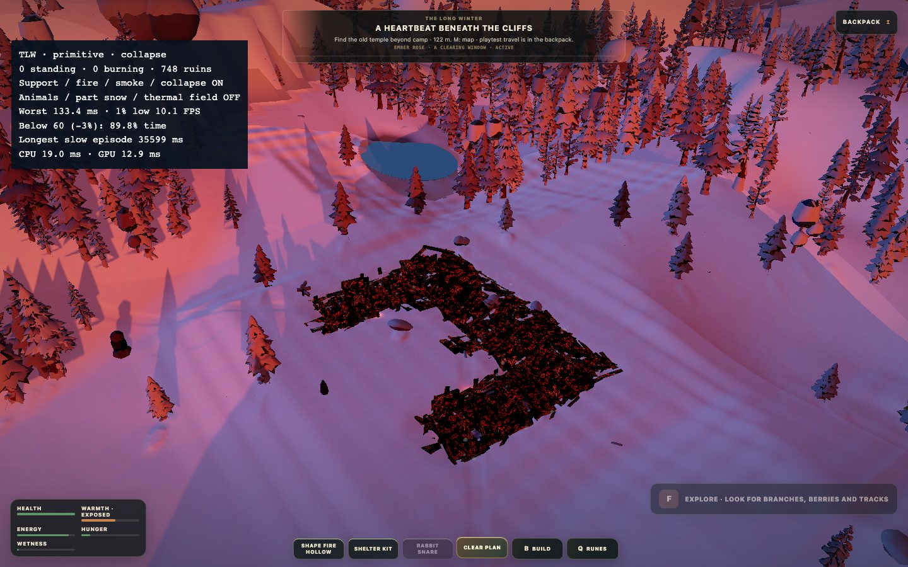
0 osaa pystyssä, 0 palaa, 748 rauniota. Savuworker-virheitä 0; odottavia kyselyitä 1. Sortumacommitin huippu 0.0 ms, tuennan pääsäiehuippu 0.1 ms. Näitä huippuja ei pidä summata.
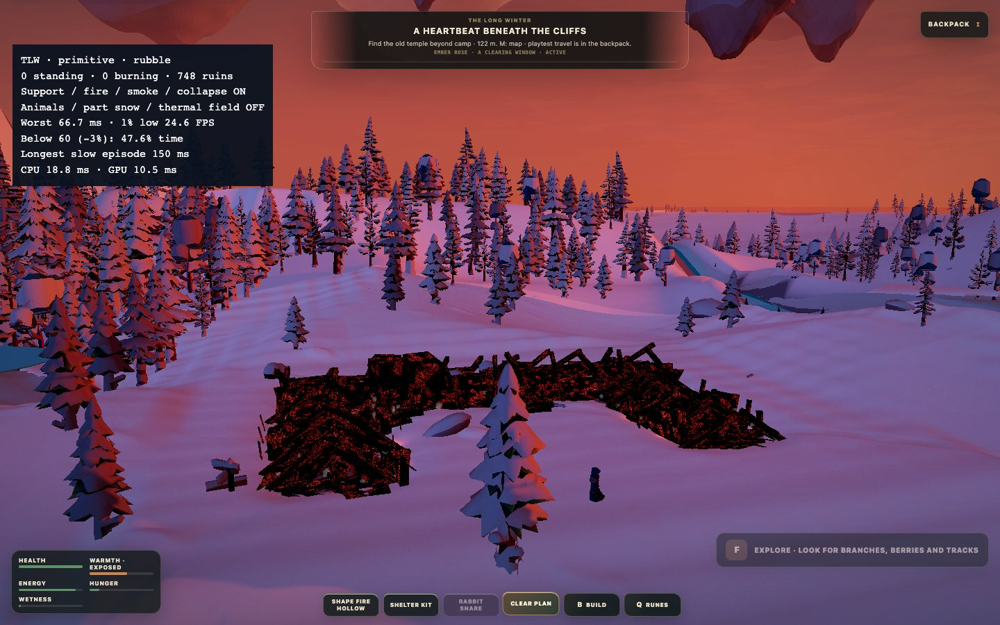